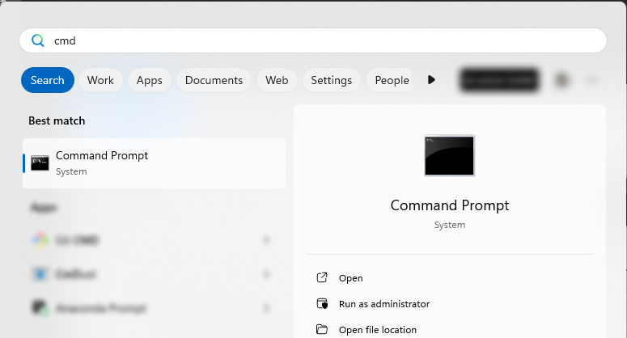
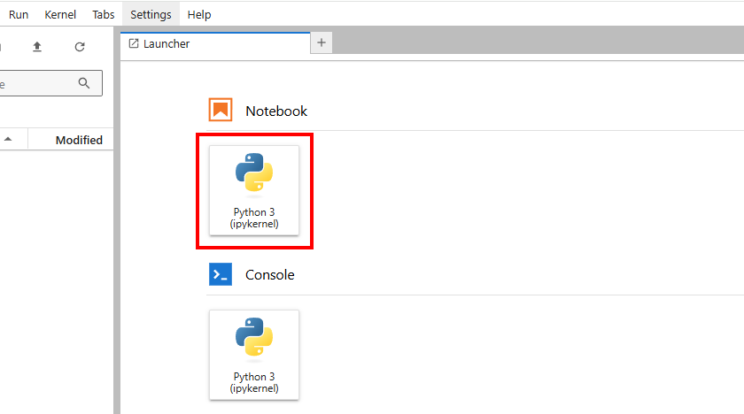

Required Software and Knowledge
Learning Objectives
Installation and setup of the necessary software on a Windows System
Starting Jupyter Notebook to prepare for the course elements
Jupyter Notebooks are a powerful environment for interactive programming, data analysis, and visualization. To use Jupyter Notebooks on a Windows PC, you need an appropriate software infrastructre. The following steps show you how to prepare your computer and which freely available resources you can use to acquire basic knowledge before starting the courses.
Setting Up the Infrastructure for Jupyter Notebooks on a Windows PC
While preparing for course units, we will use the Windows Command Prompt (CMD) at certain points. The Command Prompt is a command-line environment that allows you to interact directly with your operating system by entering text commands. It enables you to launch programs, manage files, and control system processes. CMD is particularly useful for developers to execute installations or configure tools such as Python and Jupyter.
You can open the Command Prompt by pressing the Windows key, typing “cmd” directly in the search bar, and pressing Enter (see figure).
A complete reference of commands and syntax can be found in the Microsoft documentation or by entering help in the Command Prompt.
Installing Python
Jupyter Notebooks are based on Python, so you first need to install Python.
1. Python and Pip:
Download the latest version of Python from the official Python Website and install it. Ensure that the “☑ Add Python to PATH” option is checked during installation.
If Python is not automatically added to the PATH, you can configure it manually. The PATH is an environment variable that informs the operating system where to find executable files like Python. To add Python to the PATH, follow these steps:
Open the Start menu, search for Edit the system environment variables, and open the corresponding settings.
Click on Environment Variables… at the bottom of the window.
In the System variables or User variables section, find the variable Path and click Edit.
- Add a New entry pointing to the Python installation directory, for example:
C:\Python39\(for Python 3.9)Additionally:
C:\Python39\Scripts\, as tools likepipare located there.Confirm the changes and restart the Command Prompt for the changes to take effect.
After this step, Python should be executable from the Command Prompt using the command python or python3. You can verify this by entering python --version to verify the installed Python version.
2. Installing Jupyter Notebook
To work with Jupyter Notebooks on your local computer, you need to install the necessary components. The following guide assumes that you have already installed Python and pip. Open the Command Prompt (CMD) and run the following commands sequentially:
pip install jupyterlabpip install notebook
The installation process should take less than 5 minutes and no additional input is required during installation.
3. Starting Jupyter Notebook
Once the installation is complete, start JupyterLab using the following command in the Command Prompt:
jupyter lab
A browser window should open, displaying your Computer’s folder structure on the left side (e.g., “Downloads,” “Documents,” etc.). Navigate to the folder where you want to create your first notebook.
If the Launcher-Tab does not open automatically, click the “+” icon in the top-left corner:

Now, open a new notebook:
In the upcoming course elements, we will only work with Python3, so kernel selection is not relevant yet. You can complete all course elements using the Python3 kernel. If you later want to work with different programming languages and Python environments, you should explore the various available options.
Now, you have created your first Jupyter Notebook and are ready to start. Name your notebook – by default, a new notebook is created with the name “Untitled.” You can rename it in the overview tab on the left side with “Right-click > Rename.”
Required Knowledge
Within the CoKLIMAx-II resources, we do not provide in-depth Python training. The Notebooks and learning materials we have developed and provided can be used without prior programming experience. If you are interested in improving your Python skills, we recommend using freely available resources such as those on YouTube.
For questions and issues while creating your own Jupyter Notebooks, the best place to seek help is Stack Overflow, where most common questions have already been answered.